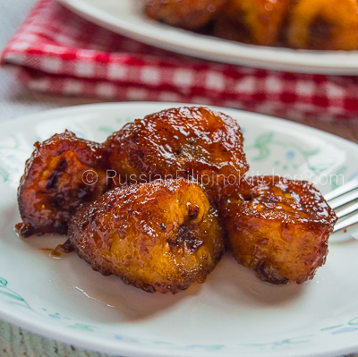

Fried Banana

Description
This is a traditional recipes in my country. We like to eat fried bananas as snacks.
It is so easy to make this by yourself and it tastes amazing.
Ingredients
- Bananas
- Cooking oil
- Sugar
Steps
- Peel the skin off of the bananas and put them on a plate. You can cut them into smaller pieces if you wish.
- Put the frying pan on the stove. When it gets slightly heated, pour in just a bit of cooking oil.
- When the oil is heated to a suitable temperature, just put the bananas in the pan.
- When the bananas are considerably fried, turn them onto the other side and fry again.
- When the bananas turn brown, you can take them out and put them on the plate.
- Just sprinkle some sugar onto the fried bananas and you can enjoy a delicious snack.